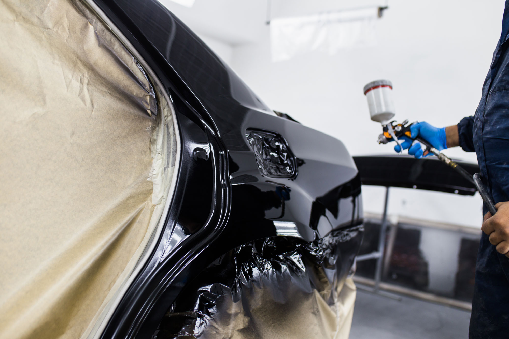
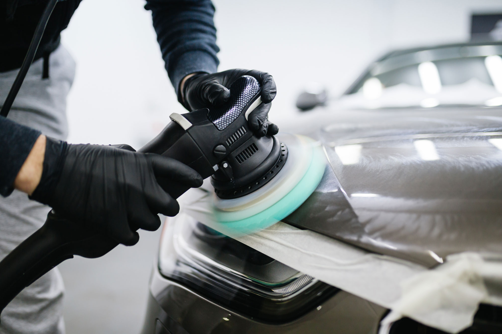
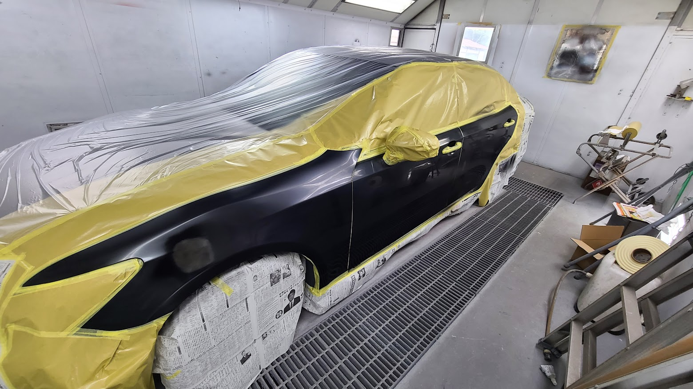

お客様のご希望に寄り添いながら、
大切なお車を丁寧に修理いたします。


どんなキズでも
お気軽にご相談を
車にキズがついてしまった
へこみをきれいに直したい
塗装のはがれや色あせが気になる
事故後の修理を相談したい
修理費用の目安を知りたい
仕上がりにこだわって修理したい
ABOUT
当店では、自動車のキズやへこみ、鈑金塗装などの修理に対応しています。
大切にしているのは、お客様のご希望をしっかり伺い、満足していただける仕上がりを目指すことです。
修理内容や仕上がりのご希望は、お車の状態やお客様によってさまざまです。
一台一台の状態を確認しながら、必要な作業を丁寧に行い、安心してお任せいただける対応を心がけています。
SERVICE
へこみやキズ、事故による損傷など、
お車の状態に合わせて鈑金修理を行います。
見た目の修復だけでなく、仕上がりにも
こだわりながら丁寧に作業いたします。
キズや色あせ、補修箇所の塗装など、
お車に合わせた塗装修理に対応します。
周囲の色味とのバランスを確認しながら、
自然な仕上がりを目指します。
日常の中でついてしまった
小さなキズやへこみもご相談ください。
修理方法や費用感についても、
分かりやすくご案内いたします。
事故による損傷や修理についても、
お車の状態を確認しながら対応いたします。
どこまで直したいか、どのように仕上げたいかを伺い、
ご希望に沿った作業を心がけています。
FEATURES
修理の内容や仕上がりのご希望を丁寧に伺いながら作業を進めます。
予算や状態に合わせたご相談も可能ですので、まずはお気軽にお問い合わせください。

お客様に頼んでよかったと思っていただけるよう、仕上がりを大切にしています。
見た目の美しさはもちろん、細かな部分まで丁寧な作業を心がけています。
大きな事故修理だけでなく、小さなキズやへこみの修理もご相談いただけます。
これくらいで頼んでいいのかなと思うようなお悩みも、安心してご相談ください。
PRICE
自動車修理の料金は、キズやへこみの大きさ、
修理範囲、塗装の有無などによって異なります。
まずはお車の状態を確認したうえで、
必要な作業内容とお見積もりをご案内いたします。
小さなキズやへこみも、お気軽にご相談ください。
修理・施工の一例
※画像をタップで拡大
＼ お気軽にお電話ください ／
MESSAGE
車のキズやへこみは、見た目だけでなく気持ちにも影響するものです。
当店では、お客様のご希望にできる限り寄り添いながら、満足していただける仕上がりを目指して作業を行っています。
修理するか迷っている方、費用感を知りたい方、仕上がりにこだわりたい方も、まずはお気軽にご相談ください。
お客様に安心してお任せいただけるよう、
一つひとつ丁寧に対応いたします。
| 店舗名 | Garage-K |
|---|---|
| 住所 |
〒224-0025 神奈川県横浜市都筑区早渕 １丁目２４−５ |
| 電話番号 | 050-5448-6693 |
| 営業時間 | 9:00 ～ 18:00 |
| 定休日 | 不定休 |